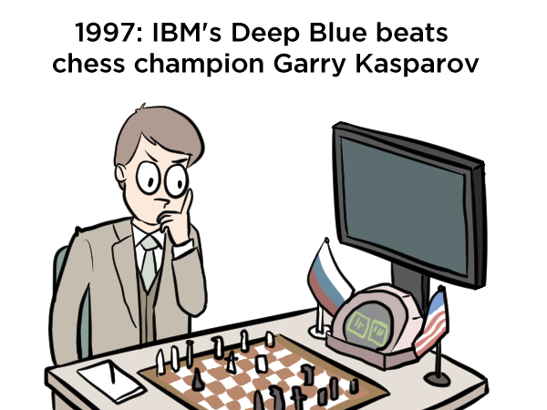

Samsung Card: Natural Language Processing
Hyopil Shin (Graduate School of Data Science, Seoul National University)
hpshin@snu.ac.kr, https://sites.google.com/snu.ac.kr/gsds-nlp/home,
http://knlp.snu.ac.kr
T.A: 이상아(visualjan@snu.ac.kr)



(http://www.theverge.com/2016/3/11/11208078/lee-se-dol-go-google-kasparov-jennings-ai)
Course description
자연언어처리의 기본개념과 텍스트 처리에
초점을 맞추어, 한국어 raw text를 처리하는 다양한 방법들에 대해 살펴본다. 텍스트 분류,
단어임베딩과 최근에 많이 활용되고 있는 Transformer를 활용한 방법론에 초점을 맞춘다.
Python, PyTorch를 활용하여 문서분류, 한국어 처리 등을 집중적으로 학습한다.
Updates
Useful Sites
- PyTorch
- Other Resources
Schedule
|
Date |
이론 |
실습 |
|
| 1 | 6. 11 (Fri) |
Introduction
to Natural Language Processing
NLP for Supervised Learning- A Brief Survey Vector
Semantics and Word Embeddings I
|
NLP Modules and
Tools PyTorch
|
| 2 | 6.17(Thu) |
|
pytorch-seq2seq
한국어 News Data 분류
|
| 3 | 6.24(Thu) | Transformers Huggingface Transformers |
Huggingface 기본구조
모델쓰는법 Various Korean text processing with Huggingface Transformers and Korean Pre-trained models 한국어 구어체 데이터 관련 task Distillation (based on BERT) |